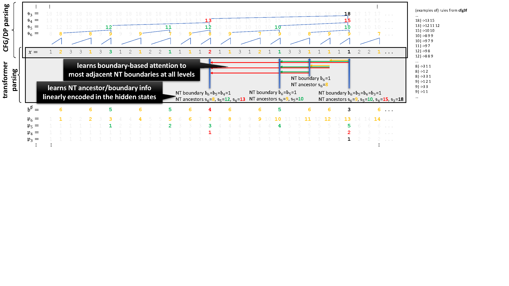

Core Discovery: GPT-2 trained on CFG data builds internal parse trees and uses DP-like attention to track hierarchical structure at every level.
- Top: The CFG generates strings with hidden structure (NT ancestors s₃-s₆, terminals x)
- Bottom: The transformer learns to encode NT boundaries and ancestors in its hidden states
- Attention patterns concentrate at NT boundary positions, mimicking CKY parsing
- Color-coded numbers show boundary counts (b♯) and position counters (p₃-p₆)

Figure from Allen-Zhu & Li (2024): NT ancestor encoding and boundary-based attention patterns